Free Shuttle Bus
Free shuttle buses connect all terminals. Shuttle bus stops are found outside the ground level floor (1F) of each terminal. They run every 5-15 minutes.Shuttle Bus from Terminal 1 to Terminal 2 and Terminal 3
Terminal 1 bus stop 6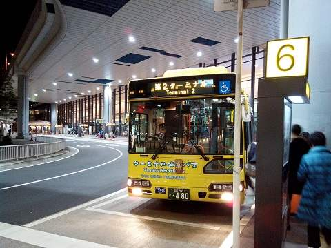
Shuttle Bus from Terminal 2 to Terminal 1
Terminal 2 bus stop 8 and 18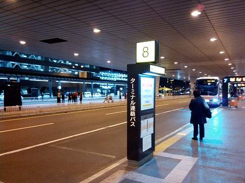 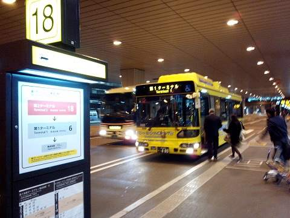
Shuttle Bus from Terminal 2 to Terminal 3
Terminal 2 bus stop #24 - Just across the road in front of the terminal building.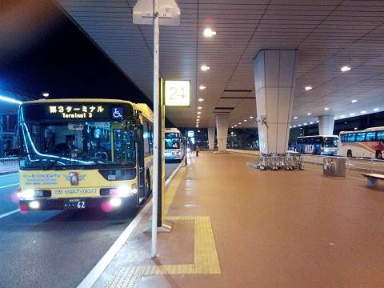
Shuttle Bus from Terminal 3 to Terminal 1 and Terminal 2
Exit the Terminal 3 building door, turn right and go down by the escalator. The bus leaves from the ground floor.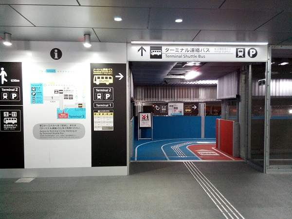 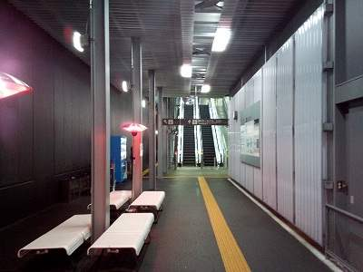
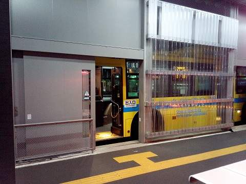
※Shuttle buses from Terminal 3 run more often to Terminal 2 than to Terminal 1, especially before 8:00 and after 20:00.
The first shuttle bus from Terminal 3 to Terminal 2 leaves after 4:30.
The last shuttle bus from Terminal 3 to Terminal 1 leaves at 21:30.
The last shuttle bus from Terminal 3 to Terminal 2 leaves at 23:20.
Walking Terminal 2 to Terminal 3:
After you get out of the Terminal 2 building, walk to the right, following the blue path.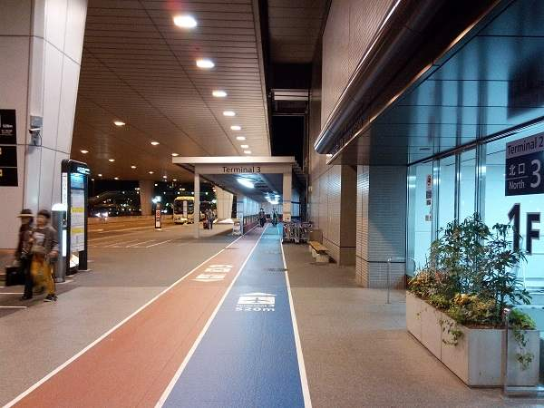 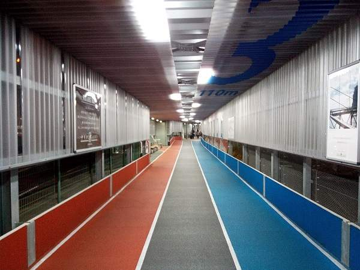
Walking from Terminal 3 to Terminal 2
After you get out of the Terminal 3 building door, turn immediately to the left and go down the escalator, then walk following the red path.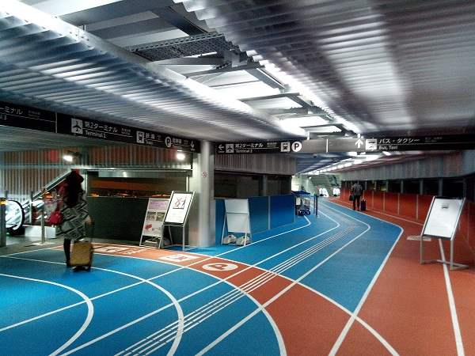 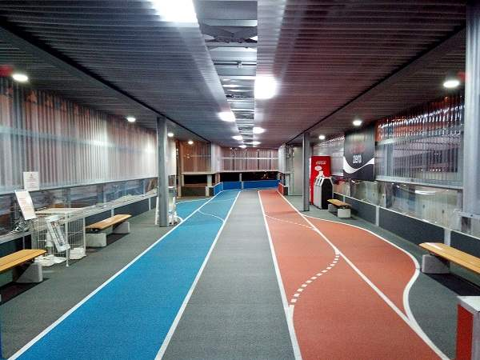
Train Stations at Terminals 1 and 2
JR East and Keisei trains stop at Narita airport terminals Terminal 1 and Terminal 2. The train stations are on the B1 floor (underground). There is no train station at Terminal 3. So if you arrive at Terminal 3, take a free shuttle bus to Terminal 1/Terminal 2, or walk 5-10 minutes to Terminal 2.Shuttle bus stops can be easily found at ground level, outside of each terminal building.
Prepaid SIM sold at Terminal 3
Terminal 3 has a prepaid data SIM vending machine which sells prepaid data-only SIM which is valid for 7 or 14 days, for 2,000 and 3,500 yen respectively. It is located next to the Terminal 3 information desk. I haven't seen any such vending machines at other terminals.Airport WiFi
Narita airport has free WiFi at all terminals.Capsule Hotel at Terminal 2
If you are a backpacker who missed all your trains and buses, or if your flight from Narita is very early, the capsule hotel at Terminal 2 may be an option. The reception works 24h. Official website in English: "9h (ninehours)". If you are a more gorgeous traveler, find a hotel nearby.Food Court at Terminal 3
Noodle & dumpling for slightly more than 800 yen...was a good deal.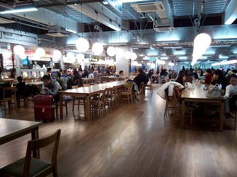